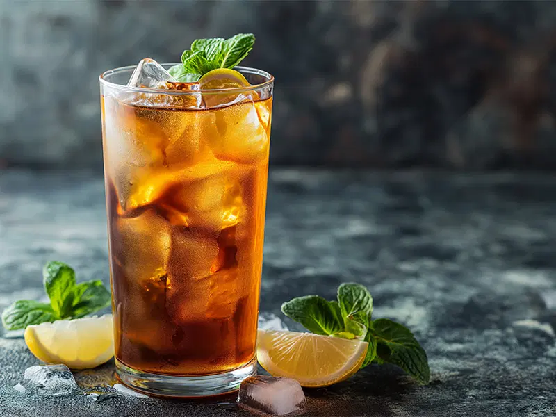

Le Long Island est un cocktail américain à base de plusieurs alcools, notamment de la vodka, du gin, du rhum et du tequila. Il est connu pour sa complexité et son goût fort. Découvrir d'autres cocktails
